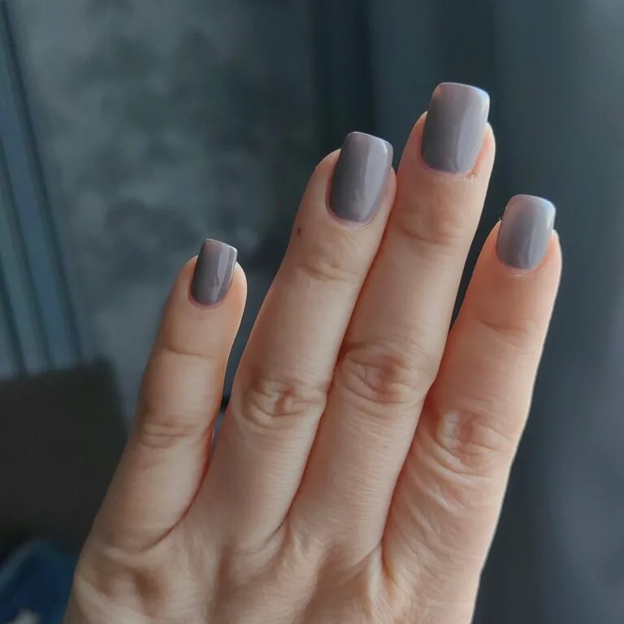
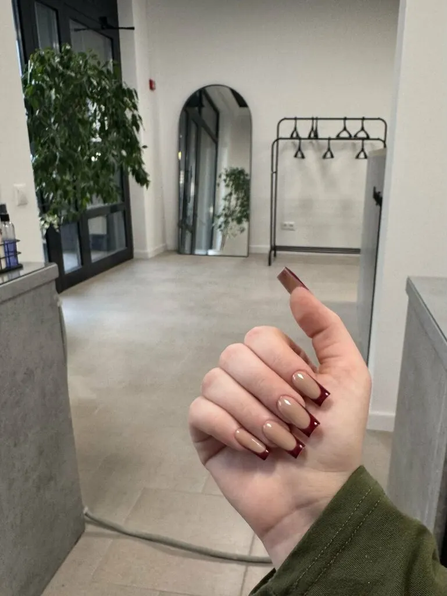
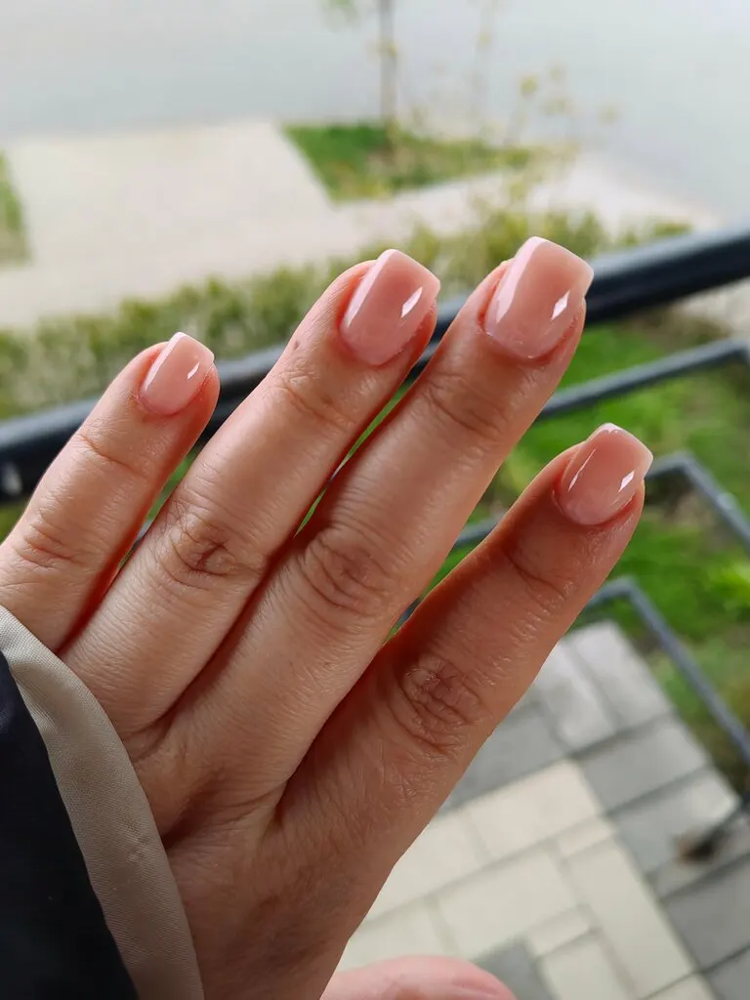

Студия ногтевого сервиса · Обнинск
Маникюр и педикюр в Обнинске – цена до записи
Цены – из карточки салона, а не «примерно». Пишете в WhatsApp – называем точную стоимость и время, ждать не придётся.
- Рейтинг 4,7 · 57 отзывов на Яндекс.Картах
- Маникюр с покрытием – 1 300–1 700 ₽
- Парковка и остановка – рядом

Что входит в маникюр с покрытием
Входит
- Обработка кутикулы и форма ногтей
- Однотонное покрытие гель-лаком из палитры студии
- Масло для кутикулы в конце приёма
Отдельно, если нужно
- Укрепление и наращивание
- Френч, дизайн, роспись
- Снятие чужого покрытия – цену назовём при записи
Цена названа до записи
Точные цены на маникюр – из карточки салона на Яндекс.Картах. Остальное назовём при записи: в отзывах про студию пишут «самая адекватная цена в городе».
Маникюр
- Классический маникюр с покрытиемцена из карточки салонаот 1 300 ₽
- Комбинированный маникюрцена из карточки салонаот 500 ₽
- Наращивание с френчемза 1,5 часа – из отзыва клиентки2 500 ₽
Педикюр и остальное
- Педикюрс покрытием или безуточнить
- Снятие покрытияаппаратомуточнить
- Дизайн и росписьцена по фото до записиуточнить
В карточке салона заполнены только цены на маникюр – их и показываем как есть. Педикюр, снятие и дизайн назовём точной суммой при записи: ниже не будет сюрпризов.
Как проходит запись
- 01
Пишете в WhatsApp, что хотите сделать
Называем точную цену и свободное окно – онлайн-запись у студии уже есть, но на чужой странице.
- 02
Приходите к своему времени
В отзывах про время ожидания – 100 % положительных оценок: ждать не заставляют.
- 03
Мастер работает быстро
Наращивание с френчем сделали за 1,5 часа – так пишет клиентка в отзыве.
- 04
Платите по названной цене
«Самая адекватная цена в городе» – формулировка из отзыва, а не из рекламы.


Что обещаем
Ждать не заставим
Аспект «Время ожидания» в карточке – 100 % положительных оценок, 31 отзыв.
Парковка всегда есть
Парковка и велопарковка у студии, остановка «Улица Усачёва» – 520 м пешком.
Принимаем по предварительной записи
Запишитесь заранее – под ваше время мастер свободен.
Сертификаты и акции
Подарочные сертификаты, скидки и бонусы заявлены в карточке салона.
Отзывы с Яндекс.Карт
«Отличный салон! Качественный маникюр и педикюр. Девочки молодцы, работают быстро и аккуратно, по приятным ценам!»
Мария Аверкина · 28 июля 2025
«Очень атмосферная студия. Быстро, качественно, безопасно, а так же самая адекватная цена в городе. Спасибо Вам.»
Наталья Колмогорцева · 4 марта
«Мастер Юлия, реально ТОП, работает быстро, аккуратно и я всегда довольна результатом. В студии отличная палитра, на любой вкус и цены приятные, рекомендую.»
Елизавета Якимова · 3 июня
Отзывы с карточки на Яндекс.Картах, без правок.
Частые вопросы
Сколько стоит педикюр?
В карточке салона цены на педикюр нет – напишите нам, назовём точную стоимость до записи.
Где вы находитесь?
ул. Усачёва, 3, 2-й этаж. Студия переехала: старый адрес на Долгининской больше не работает. Остановка «Улица Усачёва» – 520 м, парковка рядом.
Как записаться?
Кнопка на сайте открывает WhatsApp студии: напишите услугу и желаемое время, подтвердим запись.
Долго ли делается наращивание?
По отзыву клиентки: наращивание с френчем сделали за 1,5 часа. Точное время зависит от длины и дизайна – назовём при записи.
Запись в WhatsApp – ответим быстро
- Адрес
- ул. Усачёва, 3, 2-й этаж, Обнинск
- Часы
- по предварительной записи
- Телефон
- +7 (933) 096-44-96